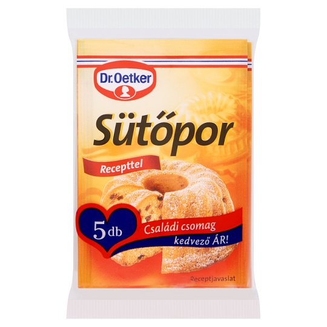

|

|
Mi is az a sütőpor?
A sütőpor a sült tészták térfogatnövelésére szolgáló anyag.
Összetétele
A nátrium-hidrogén-karbonát elterjedése előtt az ammónium-bikarbonátot sütőporként is alkalmazták.
Jellegzetes összetétele:
- 30% nátrium-hidrogén-karbonát (szódabikarbóna), amely savas anyag hatására lebomolva szén-dioxidot bocsát ki;
- 5-12% monokalcium-foszfát, és
- 21-26% nátrium-alumínium-szulfát.
Sütéskor a széndioxid-felszabadulás sebességét különböző savhordozók hozzáadásával szabályozzák:
- foszforsav savanyú sója (Ca(H2PO4)2),
- difoszfátok (E450).
- nátrium-alumínium-foszfát (E541).
- borkő, vagyis monokálium-tartarát bio sütőporban, mert a borkészítés természetes mellékterméke.
- fumársav (képlete: HO2CCH=CHCO2H).
- alumínium-ammónium-szulfát (E523) ipari sütésnél.
Emellett még keményítőport is kevernek hozzá.
Nem összetévesztendő a szalalkálival, ami tisztán csak ammónium-hidrogén-karbonátot tartalmaz, ami a sütés során szén-dioxidra, vízre és ammóniára bomlik.
|